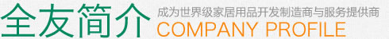
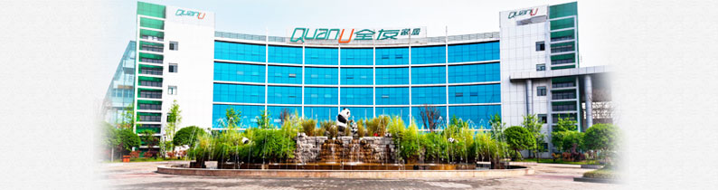

全友家私有限公司位于崇州市工业集中发展区，创建于1986年，经过二十余载的励精图治，已发展成为集研、产、销一体的全国最大板式家具生产龙头企业。
公司主要生产板式套房家具、实木家具、床垫、沙发、软床等系列产品，产品销售、服务网络覆盖全国各地。是中国家具制造业为顾客提供“一站式家居服务”的典范，赢得了“绿色全友，应有尽有”的美誉。公司产品连续多年畅销全国，并远销欧美、东南亚多个国家和地区，产品销量在全国同行业中连续多年遥遥领先。
公司投巨资兴建的全友家具国际工业港，由德国BRUNSARCHITEKTEN规划设计院与意大利COMANI规划设计院规划设计，以“现代、绿色、生态、国际化”为设计理念，是国内一流、国际领先水平的家具工业港。
公司全面推进企业信息化战略，引入美国惠普战略咨询、德国SAP-ERP管理系统、法国达索PDM产品研发信息管理系统，并凭借强大的自有IT管理团队，开发出一整套供应商管理、品质管理、客户管理、终端运作管理系统，实现了从产品研发设计、采购、生产制造、物流、销售，到顾客售后服务的全价值链信息化集成管理，从而整合产业上、中、下游资源，为顾客提供卓越的产品和服务价值。
公司在行业内率先建立了ISO9001质量管理、ISO14001环境管理和OHSMS18001职业健康安全管理三大体系认证；获得“中国最佳售后服务奖”和“中国最佳特色服务奖” 、“2012绿色设计国际贡献奖”、“绿色先锋”企业称号等殊荣。
全友以“成为世界级家居用品开发制造商与服务提供商”为企业愿景，以“创造美好家居生活”为企业使命，以“绿色文化、鱼水文化”为企业核心文化价值，通过持续的管理创新、技术创新，以国际化视野，竭诚为广大客户提供高品质、多样化的家居产品和服务，引领舒适、环保、健康的家居生活方式。
